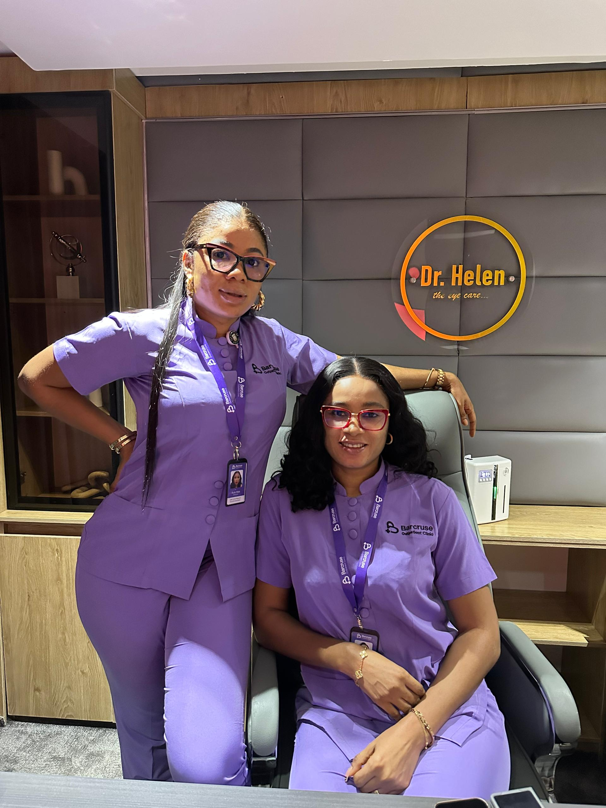
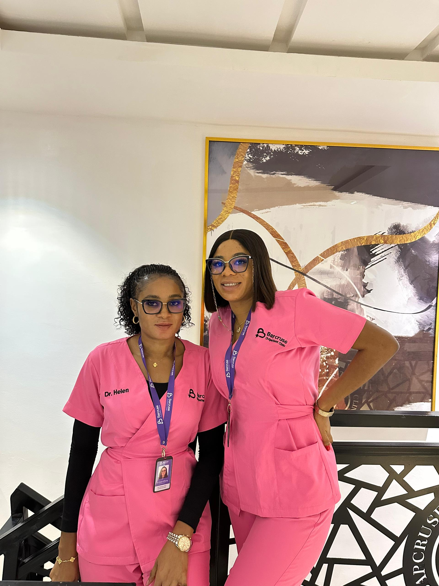
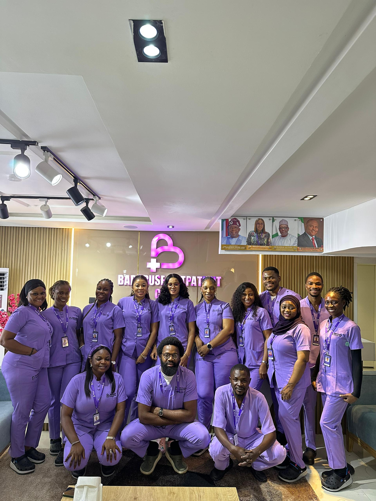

Primary care
Consultations, diagnosis, treatment plans and ongoing health support.
We are an outpatient clinic in Garki, Abuja, bringing medical, dental, eye, laboratory and pharmacy services together in one calm, welcoming space.
Barcruse was created around a simple idea: healthcare should feel less fragmented and more personal. Our team works together so your experience is easy to understand, from consultation and testing to treatment and follow-up.
We welcome families, professionals and individuals who want a trusted care partner for both the everyday and the unexpected.



A considered range of services supported by a team that cares about the details.
Consultations, diagnosis, treatment plans and ongoing health support.
Preventive and restorative dental care delivered with comfort in mind.
Eye examinations, vision guidance and support for clearer everyday living.
Accessible testing to give your clinician reliable information when it matters.
Clear medication guidance and practical support for your treatment plan.
Proactive checks that help you understand your health and act early.
We make room for your concerns, context and questions before we recommend a next step.
We explain what we find and what it means, so you can make decisions with confidence.
We keep your care joined up across services, with thoughtful follow-up when you need it.
Meet the people who make that promise real every day.
_1786532005152.jpeg)
Share your details and the clinic team will call to confirm your visit.